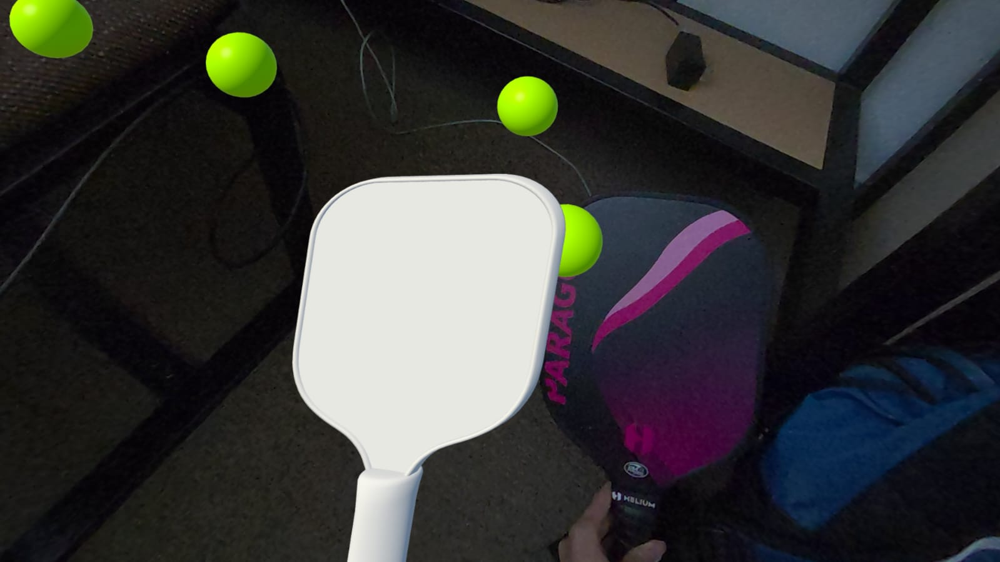
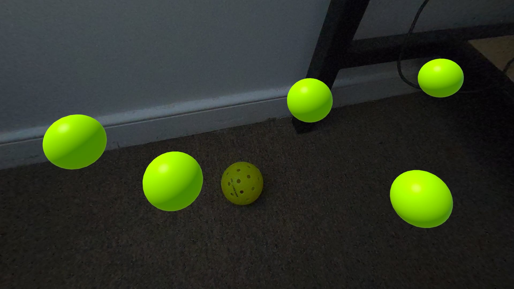
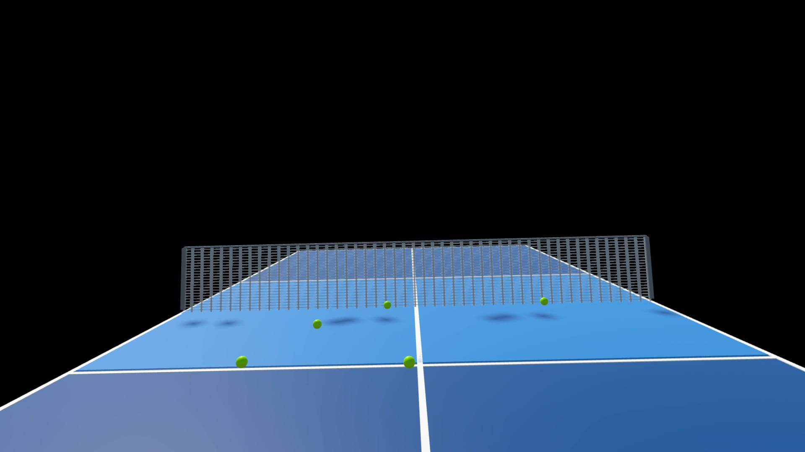

All students are required to document the progress and results (program executables, images, video clips, reports, etc.) of their final projects using html. Please inform the instructor your project website location, as soon as you finish setting it up.
All students are asked to send in a WRITTEN progress report and present orally on their final course projects. It should consist of a brief summary of what has been done so far (code developed, ideas formed, etc.). Here are some additional suggested elements to be included in your report:


